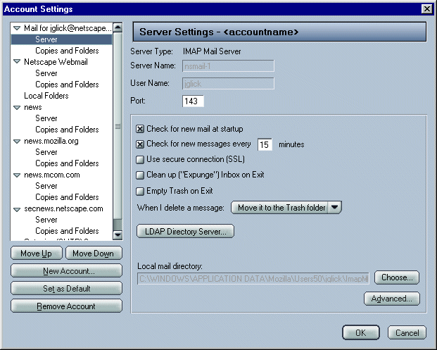
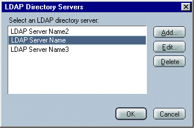
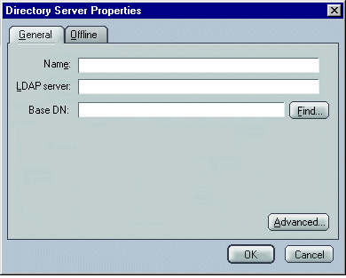
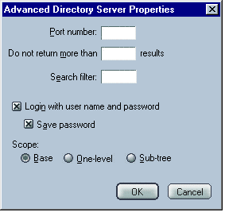
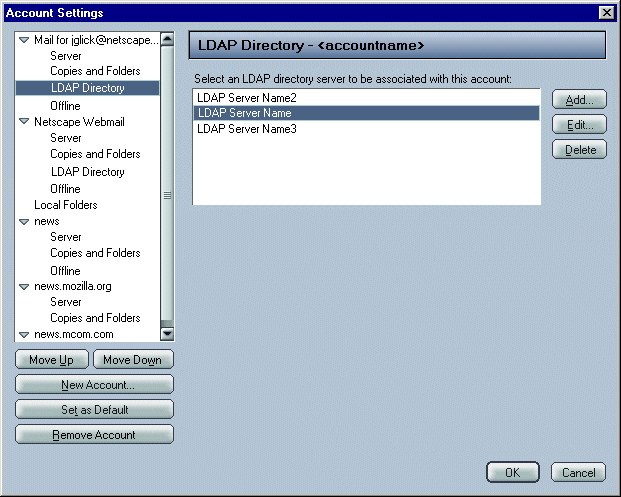

|
Mojo/Mozilla: Mail: LDAP |
UI Proposal
|
|
Global Address Book/Account Specific LDAP |
Last Modification: |
|
Author: Jennifer Glick |
Status: Proposal |
||||||||||||
|
Quicklinks: |
Feature Team
Please post all comments and suggestions regarding this spec to the newsgroup, netscape.public.mozilla.mail-news. |
This spec outlines a proposal in which Address Book setting are Global and LDAP directory server settings are Per Account.
Preferences associated with Address Book are global for all accounts and are located in the Preferences: Mail and Newsgroups: Address Books panel. This includes Email Address Collection and Address Autocompletion settings.
Users can configure address autocompletion to search their "Local Address Books" and/or an "LDAP Directory Server". From this dialog, users can not specify which LDAP directory server will be used. A different LDAP directory server can be used for each separate account. The LDAP directory server which is associated with each specific account will be used. Setting up and/or selecting an LDAP directory server is accessed using the Mail/News Account Settings dialogs. An LDAP directory panel is available per account.
Selecting and configuring an LDAP directory server is per account. Each account can be associated with a different LDAP directory server. In the future, each account can be associated with multiple LDAP directory servers.
Each IMAP and POP (NNTP?) server panel will have an "LDAP Directory Server..." button on it which will enable the user to select and/or setup an LDAP directory server.

Clicking the "LDAP Directory Server..." button opens the "LDAP Directory Servers" dialog. This dialog is used to select and LDAP directory server or edit or delete an existing server, or add a new server.

Clicking "Add" or "Edit" from the LDAP Directory Servers dialog opens the "Directory Server Properties" dialog. Note: Offline tab is not currently implemented.

The "Find..." button retrieves Search Root information from the server and opens a dialog of available suffixes.
Clicking on the "Advanced..." button on the "Directory Server Properties" dialog opens the "Advanced Directory Server Properties" dialog, which is used to configure more detailed LDAP directory settings.

Each IMAP and POP (NNTP?) server panel will have an "Advanced..." button on it which will provide access to select and/or setup an LDAP directory server. Note: the IMAP Server panel already has an Advanced button, but the POP server panel does not.

Each account has its own LDAP directory server panel.

Typedown pane -Edit->mail/news->Account Settings. One pane per account.
Directory Servers Dialog - Same as the screen shot.
Directory Servers properties dialog:
No offline tab for this release.
Advanced Options Dialog:
The "Do not display more than X results" in "Address Autocompletion" box is the preference for autocompletion where we will not show more than X results in the mail compose window.
The "Do not return more than X results" is the preference we set to tell the server to return only X
results.